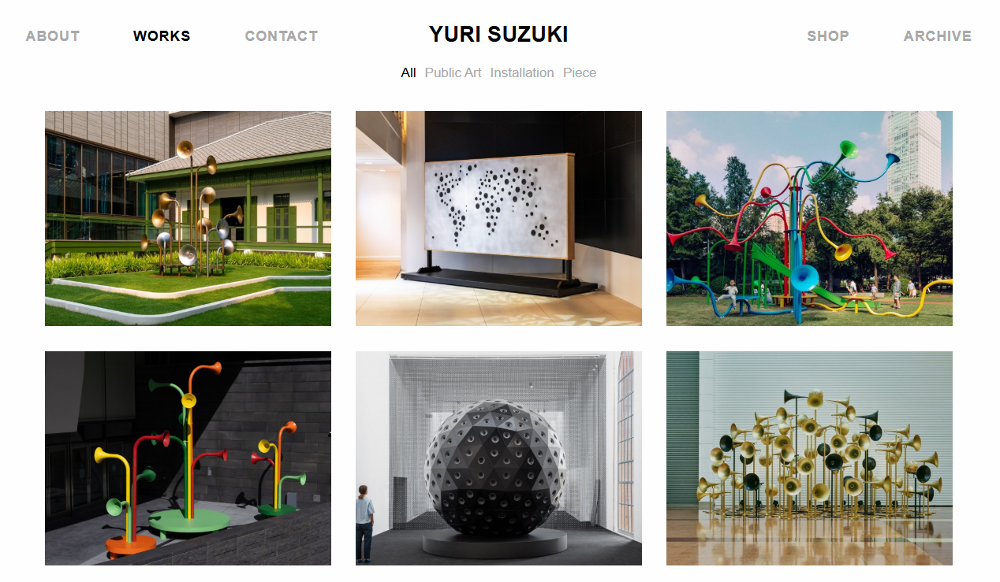

2. Inclusive UX and accessibility technology
3. Sonic interaction and emotional computing
- Accessibility-first app design (e.g., Be My Eyes, Seeing AI)
- AI-based emotion recognition and adaptive voice UI
- Plant sonification and sensory translation practices (e.g., "listening to trees")
Microsoft
Inclusive Design Strategy: Combines mainstream accessibility features (e.g., Windows, Office 365) with experimental research via the Enable Group.
Seeing AI: A multifunctional tool praised for text reading but criticized for inconsistent object/scene recognition, poor usability (clunky interface, iOS-only, battery drain), and the “Independence Paradox.”
Project Soundscape: Spatial audio ambient awareness—validates a sound-first model, but remains functionally focused and lacks affective sonic depth.
Apple
Ecosystem-Embedded Accessibility: On-device ML for privacy and responsiveness.
VoiceOver & Eye Tracking integration and gesture-based control.
Music Haptics shows cross-sensory translation of emotional data (music to touch).
Service-oriented, cloud-based AI.
Google Project Relate: Personalized speech AI and scene analysis, but with lower usability scores and privacy trade-offs compared to Apple.
Be My Eyes / Be My AI
Human-in-the-loop via volunteers; GPT-4-powered Be My AI automates description but stays transactional VQA—lacks emotional context or ambient awareness.
Key Critique: The “Independence Paradox”
These tools promise autonomy but introduce dependencies on unreliable or emotionally sterile systems. Users must develop workarounds and bear cognitive burdens—eroding empowerment. A more emotionally aware, sonically transparent interface is needed.
Academic Research Frontiers
Penn State A11y Lab: Non-visual interaction paradigms (e.g., Grid-Coding, Wheeler inputs) informing functional clarity and navigation logic.
Washington University SAIL: Ambient sensory interfaces that lower cognitive load—supports “heads-up, hands-free.”
Artistic and Speculative Designers
Yuri Suzuki: Tactile, intuitive, emotionally engaging sound interfaces (The Ambient Machine, Sonic Playground). Informs a wooden interface object as poetic anchor.

Relations with Precedent Studies
The precedent “Measuring Diversity” sharpened care for minorities; not directly built upon due to its algorithmic emphasis.
My Project's Positioning
- Synthesis and Contribution: Combines academic rigor, corporate critique, and artistic inspiration; reframes assistive tech as emotionally supportive companion; challenges screen-reader dominance.
- Audience vs. Community:
- Primary Audience: Blind and low-vision users—prioritize lived experience, participatory feedback, emotional connection.
- Community of Practice: Corporate teams (Microsoft, Apple, Google, Be My Eyes), HCI/accessibility researchers, sound artists/speculative designers.
- Web Audio API and voice synthesis for interface feedback
- LLMs for adaptive conversation and response
- Sound mapping of emotional and functional states
- Both qualitative and quantitative approaches
- Main components: computational, aesthetic, and material
- Sonic-only form navigation demo (HTML/JS)
- Pitch-based feedback cues (e.g., success, failure, idle)
- “Digital ear” system that detects context and adapts voice
- Audio spectrogram mapping of common UX states
- Spectrogram diagrams of interface states
- Flowcharts of auditory pathways
- Sound-icon grammar chart
- Draws aesthetic inspiration from sonic cartography and non-visual design language (artists like Yuri Suzuki)
Material gesture: a small wooden tactile device with audio feedback—part interface, part poetic object.
- Ensuring clarity and usability using sound alone
- Balancing emotional subtlety with functional clarity
- Building a believable, non-intrusive AI persona
- Need to further improve coding and audio feedback systems
Concept
A vertically oriented mural that visualizes sound-first interactions for blind users, inspired by audio spectrograms and ambient soundscapes.
Visual Structure
- Vertical flow (top → bottom) represents time-based user activities
- Color gradients correspond to tone/emotion shifts
- Waveform curves represent system states (idle, confirm, guide)
- Iconic symbols layered over tone paths show user intent/actions
Interaction Segments
- Morning Greeting / Context Check
- Navigation / Task Support
- Idle Listening / Ambient Awareness
- Shutdown / Sleep Ritual
Each segment visually encodes a sonic logic: pitch, tempo, tone, duration.
References
Sonification art (e.g., listening to trees, audio plants); Music notation + UX journey mapping hybrid; Google Sound Design Kit for tone categorization.
Tools & Medium
Designed in Figma or Illustrator; printed on vertical scroll (~36" tall); with legend (pitch=action, color=tone, shape=function).
Purpose
A visual translation of auditory logic; an emotional map of sound interactions; a centerpiece for exhibition.
Concept
A tactile object for blind/low-vision users that responds to touch with sound cues—part tool, part companion.
Form
- Hand-sized, palm-friendly shape
- Soft wood or silicone shell with subtle texture
- Embedded microcontroller (e.g., Raspberry Pi Pico / Arduino Nano)
- Small speaker or vibration motor for feedback
Functions
- Touch = Confirm tone
- Long Press = Context-aware voice message
- Rotate/Flip = Mode switch (ambient / guided)
- Idle = Breathing pulse or gentle hum
References
Yuri Suzuki’s Ambient Machine; “Be My Eyes” haptic alternatives; metaphors of music box / pocket object / worry stone.
Material Qualities
Warmth, intimacy, calm; sounds tuned to natural tones (wind chimes, wood knocks, soft sine waves).
Exhibition Display
Placed next to the spectrogram mural; visitors can touch and interact; optional ambient audio loop.
Purpose
Demonstrates tangible AI interaction; offers poetic sonic feedback; bridges computation with sensory embodiment.